Navigation
- Carstensz Pyramid
- PROGRAMS & SCHEDULE
Our most imporant expeditions
- LAST CARSTENSZ REFERENCIES
- History of climbing the summit
- Legendary Carstensz climbers
- Seven Summits
- 7 Summits - History
- 7 faces of Carstensz Pyramid
- Photos from climbing
- The nature and flora
- Trekking around Carstensz
- Climbing routes to the summit
- 7summits Carstensz best Base camp
- The Tribes and People
- Climate and weather
- Climbing permits
- How to go
- The Highest Mountain of Papua New Guinea
- Why to go with us
- Malaria
- Wrote about us
- References
- Links
- Contact us
- Download


Carstensz summit – our most remarkable successes
Celebrities and whole expedition teams ask us to organize a Carstensz Pyramid expedition for them. We account this mostly to the fact that so far all our expeditions to the Carstensz Pyramid have been successful and have reached the summit.
{kind=link}
Each participiant of Carstensz Pyramid climbing expedition who summits successfully obtains this Certificate from us.
In addition to our standard itinerary of out commercial expeditions, we have been in charge of the following important ascents:
2008 – First Yugoslavian and first Serbian in 7summits
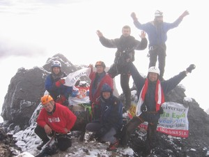
All Team on Summit Photo©JahodaPetr.com
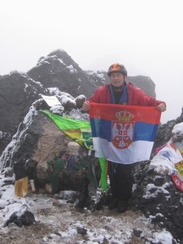
Basar Carovac on Summit Photo©JahodaPetr.com
Basar Carovac (Čarovac) from Serbia and so far Yugoslavian citizen has – by climbing the Carstensz Pyramid – finished the complete 7 Summits project including the Carstensz Pyramid. This has happened during our November expedition, whose team included also professional mountain guide Michel Marie Vincent (France), four Poles and three Czechs. The participants of the expedition reached the summit together and in unbelievably short time. They stood on the top already in 6:45, although we – as all other expeditions – set off at 2 a.m. The weather was not the best; it was drizzling throughout the whole ascent, only at the top the clouds cleared a little.
Congratulations to all!
2008 – First Chinese in 7 Summits
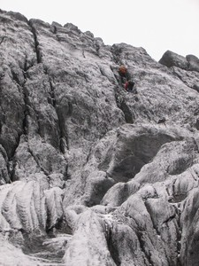
Carstensz was crusted from bottom to top Photo©JahodaPetr.com
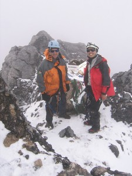
Rafal Szejwalo – South African and Steve Louie Lem – 1. Chinese (American) finishing 7 summits project Photo©JahodaPetr.com
We have never heard of a worse weather than we had this time. The whole mountain was covered by snow from bottom to top. On the ridge, we were caught by gust wind with the speed of 80 – 90 km / hour. All the fixed ropes were coated with snow and ice in such a way that jumars couldn't get fix on them. Hidden by a rock we waited for more than one hour for the weather to change. It didn't. Despite this, we decided to carry on and in 10:20 we reached the summit. The mountain rewarded us, the weather improved for a while, and then we hurried back down.
An important participant of this expedition was Steve Louie Lem, an American of Chinese origin, coming from San Francisco. If Steve manages to surmount Mount Winston in the beginning of 2009, he will become the first Chinese to complete the 7Summits project. On the summit photo, there is South-African climber Rafal Szejwallo.
We hold our fingers cross for Steve, he is a fine chap.
2007 – First Estonian and First Slovenian in 7summits
12 climbers on the summit in one day
12 climbers from five states reached the top of Carstensz pyramid in standard time 12 hours and 40 minutes from Base camp back to Base camp.
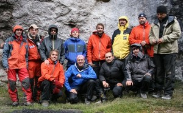
12 climbers team Photo©JahodaPetr.com
Our twelve-meber December expedition team was unusually large. There were five ouststanding climbers: Alar Sikk – ´the first Estonian which finished the 7Summits project. Franc Oderlap- boss of rescue team and the first Slovenian man which finished 7 summits project including the Carstensz pyramid. Miroslav Jakeš – a Czech climber who attempted to finish 7 summits project although being older than 50. Rudolf Francesco Zdravlje – the youngest Canadian involved in the 7 summits project and Robert Piotr Rozmus – the youngest Pole in the 7 summits project.
The other members of our team were not any beginners too. Thanks to it our team managed to reach Carstensz summit in a time of individual. We considered it a big success which was possible to reach only due to good organization and well coordinated team. Out thanks go to all members of the team.
The summit of the Carstensz Pyramid was reached on 2 DEC 2007 between
8 – 10 a.m.
Mountain guide: Petr Jahoda
.jpg)
Franc Oderlap – Slovenia Photo ©jahodapetr.cz
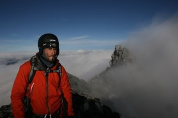
Alar Sikk – Estonia Photo©JahodaPetr.com
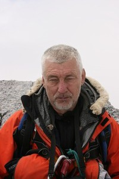
Miroslav Jakeš – Czech Republic Photo©JahodaPetr.com
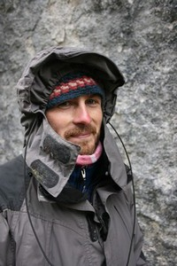
Robert Piotr Rozmus – Polish Photo©JahodaPetr.com
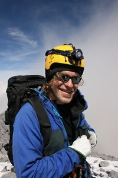
Rudolf Francesco Zdravlje – Canada Photo©JahodaPatr.com
2007 – Polish national expedition – „Korona Ziemi“
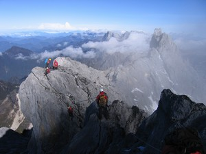
Climbing Carstensz Pyramid rich Photo ©jahodapetr.cz
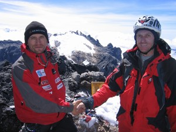
Tomasz Kobielski and Petr Jahoda on Carstensz Pyramid Summit Photo©Janusz Adamski
A six-member team of seasoned climbers, half of them had reached the summit of the highest world's mountain – Mt. Everest prior to the Carstensz expedition. The Polish national expedition was watched by virtually all Polish media. Satellite phones were used on a daily basis to send messages to Polish television.
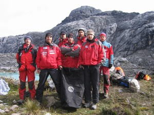
Polish National Team in BC of Carstensz Pyramid Photo©archiv of Petr Jahoda
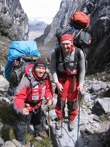
B. Ogrodnik and P. Jahoda after descent from summit Carstensz Pyramid Photo©Tomasz Kobielski
„The leader of the Polish team was Boguslaw Ogrodnik (Mt. Everest, Cho Oyu, Aconcagua, Kilimanjaro, Elbrus.), the members of the team were Tomasz Kobielski (Mt. Everst, Cho Oyu, MC Kinley.), Janusz Adamski (Mt. Everest, Cho Oyu,). Other three members of the team had not yet climbed Mt. Everest, but they had already stepped on the summits of four out of the eight summits of the 7 Summits project.“
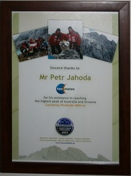
Photo© archiv of Petr Jahoda
The Polish expedition Korona Ziemi had chosen the more difficult option – the six day trekking to the Base camp. After a day of rest, the expedition crew spent one day making themselves familiar with the wall, ant of the third day the expedition set out at 2 am to the summit.
After come back, Boguslav Ogrodnik gave to Petr Jahoda Memorial Certificate: „Sincere thanks to Mr Petr Jahoda for his assistance in reaching the highest peak of Australia and Oceania – Carstensz Pyramide 4884 m. Bergson Carstensz Pyramide 2007“
The summit of the Carstensz Pyramid was reached on 31 MAR 2007 at 9:08 a.m.
Mountain guide: Petr Jahoda
2005 – First Czech in 7 summits
Miroslav Caban – 7summits
The second person in history to complete the 7summits project without using artificial oxygen on Mt. Everest and at the same the first Czech to complete 7summits (the first person to complete 7summits without the artificial oxygen on the Mt. Everest was Reinhold Messner).

Petr Jahoda and Miroslav Caban on the top of Carstensz Pyramid Photo© jahodapetr.cz
Miroslav Caban asked us for organizing his 2005 expedition. Thanks to the fact that we were informed about the planned Carstensz Pyramid reopening and the fact that permits would be issued, we closed a deal. We were one of the first expeditions which reached the Carstensz Pyramid after its reopening without the use of helicopters.
This ascent was very difficult. We set out at about 2:30 a.m. – as soon as it ceased to snow. Yes, snow lied also in the Base camp. A snow storm reached us near the summit and it rained during the descent. Despite all this, we could enjoy a moment of nice weather at the summit.
The summit of the Carstensz Pyramid was reached on 22 AUG 2005 at 8:22 a.m.
Mountain guide: Petr Jahoda